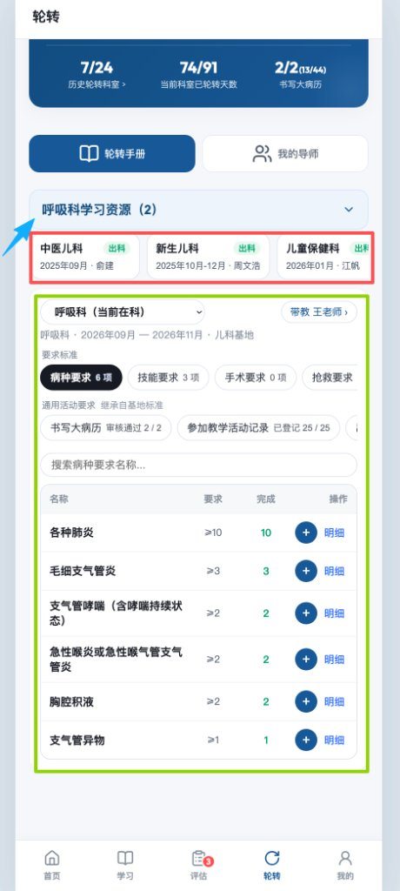
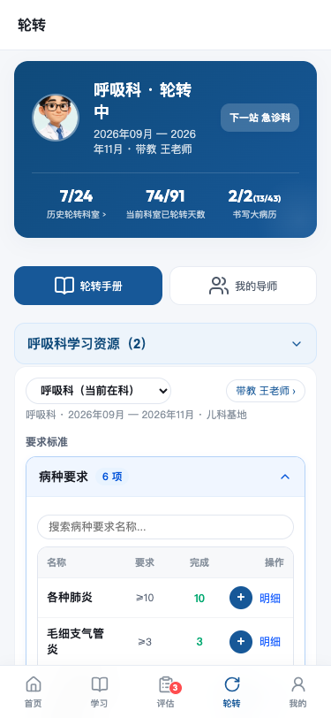
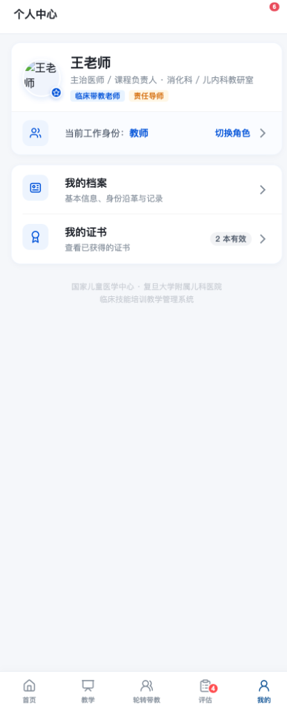
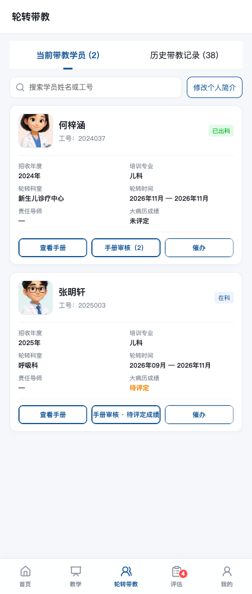
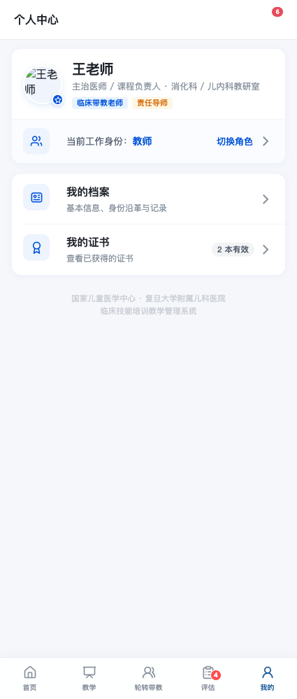

修改记录总清单（索引）
记录总数：4 项
视觉标杆：成果申报（数据概览 + 筛选胶囊 + 独立卡片 + FAB）
核心规范：统一 3D 卡通医生头像、统一 16px 卡片边距、禁用裸文字表格
| 序号 | 模块与改动主题（点击跳转） | 端别 | 定位 / 触发路径 | 涉及文件与留痕形式 |
|---|---|---|---|---|
| 07 | 多角色切换与管理端个人中心适配 | 移动端 | 移动端 → 我的 → 当前身份 / 切换角色；管理端中心 | 移动端/shared/admin-tdesign-app.js 等 · 留痕截图（3 张） |
| 08 | 轮转手册 · 结构精简与右侧箭头手风琴改造 | 移动端 | 移动端学员端 → 底部「轮转」Tab → 轮转手册 | 移动端/shared/tdesign-app.js/css · 图文对比（2 张） |
| 09 | 课程详情 · 冗余任务进度标题与课前信卡片去重 | 移动端 | 移动端学员端 → 学习/首页 → 技能课程详情 | 移动端/shared/tdesign-app.js · 图文对比（4 张） |
| 10 | 轮转带教与个人中心 · 启动错误及样式恢复 | 移动端 | 移动端教师端 → 底部「轮转带教」Tab /「我的」Tab | 移动端/shared/tdesign-app.css、shared/js/people-profile.js、入口 HTML · 图文对比（4 张） |
多角色切换与管理端个人中心适配
修改前 · 存在问题
- 角色混杂：一人多身份时无法直观预览和即时切换工作视角。
- 管理端个人中心缺失：科室主任、教务管理员登录移动端时中心布局错乱。
（改前管理角色无规范个人中心适配）
修改后 · 改动说明
- 角色切换半屏抽屉：底部 ActionSheet 列出用户当前具备的所有系统身份（规培生、专培生、临床带教老师、责任导师、管理员），勾选即平滑切换。
- 管理端全套适配：管理员端「我的」同步适配 TDesign 视觉规范与安全权限说明。


08. 轮转手册 · 结构精简与右侧箭头手风琴改造
存在问题（修改前）
- 入口冗余且冲突：顶部卡片已有「历史轮转科室 >」，下方卡片内又含科室选择下拉框，中间夹着一排横向卡片（中医儿科/新生儿科等出科胶囊），形成 3 个重复科室入口，割裂阅读流。
- 平铺列表撑爆首屏：病种、技能、手术、抢救等所有清单一次性平铺，在手机小屏需反复长滑数十屏，无法纵览完成全貌。
- 手风琴展开指示缺失：原有卡片缺少清晰的折叠指示，右侧没有标准的交互箭头。

修改内容（修改后）
- 保留科室教学资源库：严格保留顶部「呼吸科学习资源」折叠组件与教学资源库数据联动。
- 移除横向滑动卡片：彻底删除冗余的横向科室胶囊条，还原干净整洁的垂直信息流。
- 手风琴（Accordion）组件化：分为「要求标准」与「通用活动要求」两大分组，各要求项默认收起或按需展开；指标摘要（如 6 项、审核通过 2/2）紧随标题。
- 下拉箭头统一定位右侧：展开箭头（
chevron-down）严格固定在最右侧，展开时平滑旋转 180° 并高亮蓝色，完全对齐移动端标准手风琴体验。

课程详情 · 冗余任务进度标题与课前信卡片去重
修改前 · 存在问题
- 任务进度标题冗余：在「课程任务」Tab 下方存在二级标题栏「| 课程任务进度 完成各阶段必修任务以获得结业认证」，与上方已经选中的「课程任务」Tab 标签及下方的阶段任务卡片标题形成视觉与信息双重冗余，挤占首屏垂直空间。
- 课前信卡片位置重复：在「课程信息」Tab 底部展示了完整的课前信卡片（含前3项与展开全文），但该课前信已经在「课程任务」Tab 的「课前任务」清单中作为可点击、可学习的任务项存在，信息两处重复维护，用户易产生混淆。
修改后 · 改动说明
- 精简任务流首屏：移除了「课程任务」Tab 下方冗余的「课程任务进度」标题栏，点击 Tab 后直入阶段任务清单（课前、课中、课后），层级更清晰紧凑，首屏多展现一项任务内容。
- 单一信源与清晰权责：彻底移除「课程信息」Tab 底部（含单次课程与专项系列课程分支）的重复课前信卡片。课前信统一归口在「课程任务 → 课前任务 → 课前信」中查看并记录学习状态，使课程信息 Tab 专注呈现课程简介、师资团队、课程目标与大纲。
轮转带教与个人中心 · 启动错误及样式恢复
修改前 · 存在问题
- 启动脚本加载失败：根目录共享数据缺少 `?root=1` 路径标记，导致 `TeachingFeedbackData` 未定义，Vue 页面初始化中断。
- 轮转卡片样式丢失：学员列表使用了新的 `rt-m-*` 类名，但没有对应卡片、搜索栏和操作按钮样式。
- 头像无法加载：移动端静态服务器下共享头像路径未带根目录映射标记。

修改后 · 改动说明
- 为移动端共享数据入口统一补齐 `?root=1`，恢复 Vue 正常挂载和底部 Tab 交互。
- 补齐轮转带教搜索框、历史筛选、学员信息网格、状态标签和手册/审核/催办按钮样式。
- 为共享头像 URL 保留根目录映射参数，确保教师端卡片展示真实头像。
- 验证搜索学员、轮转卡片、个人中心及角色切换入口均可用，页面无 JS 报错。

